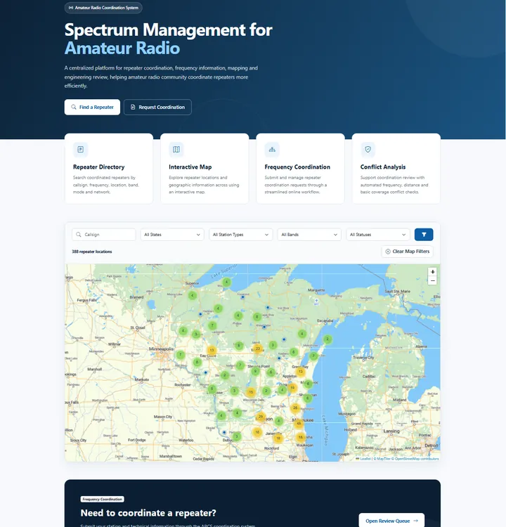
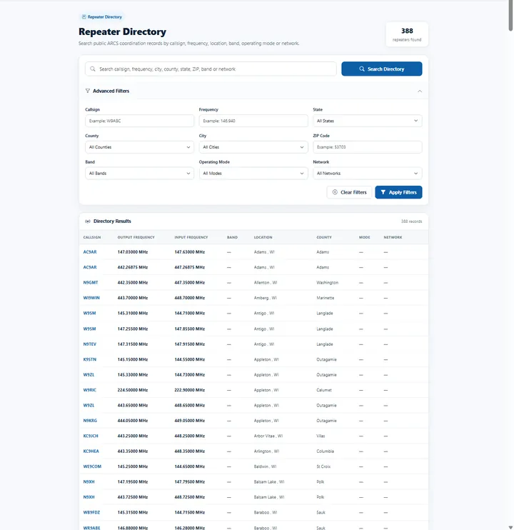
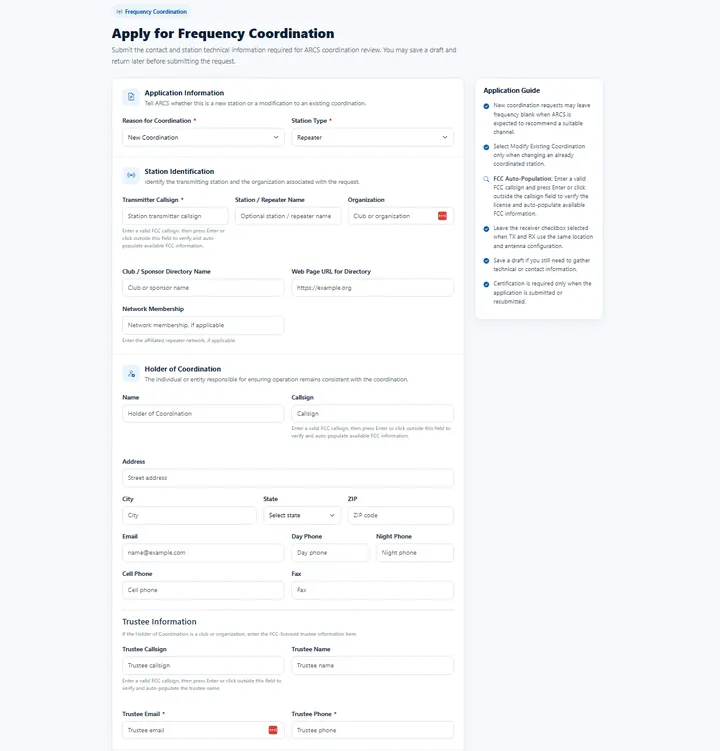
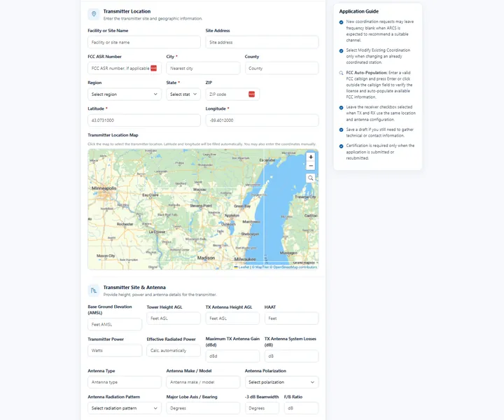

WRA's coordination platform
ARCS — Amateur Radio Coordination System
ARCS is the technology system developed and operated by the Wisconsin Repeater Alliance to perform engineering and coordination functions. WRA uses ARCS as its primary operational platform for frequency coordination.
ARCS is up and running.
New user registration is currently turned off.

01Organization and platform
WRA decides. ARCS does the engineering.
ARCS is not a separate organization. It is the system WRA built to carry out its coordination work — and coordination decisions remain with WRA and its governing structure.
 WRA — the organization
WRA — the organization
- Holds coordination authority for Wisconsin
- Sets coordination policy through the Board of Directors
- Reviews applications and makes coordination decisions
- Provides oversight, governance and membership
 ARCS — the platform
ARCS — the platform
- Takes and processes applications online
- Runs propagation and interference analysis
- Maintains the coordination database and history
- Moves each request through the coordination workflow
Technology should support coordinators, not replace them.
The guiding principle behind ARCS
02Capabilities
What ARCS does
Engineering-based analysis, explained for applicants who are not engineers.
-
01
Propagation modeling
Estimates how a proposed repeater's signal will travel across Wisconsin's terrain from its site, antenna height and power — so coverage can be evaluated as part of the application, not guessed.
- Longley-Rice analysis
- GIS mapping
- Coverage visualization
-
02
Interference studies
Checks a proposed system against existing coordinated systems for conflicts on the same or nearby frequencies, before a recommendation is made.
- Frequency conflict checks
- Distance checks
- Coverage conflict checks
-
03
Database management
Holds Wisconsin's coordination records, preserves their history and feeds the public repeater directory and map.
- Automated record management
- Historical coordination tracking
- FCC lookups and license monitoring
- Public directory
-
04
Application processing
Takes applications online, verifies FCC callsigns, calculates effective radiated power automatically and lets applicants save a draft.
- Online applications
- Automatic ERP calculation
- Self-service renewals
-
05
Coordination workflows
Moves each request through submission, review, revision and decision, with documents and correspondence kept alongside the record.
- Digital coordination workflows
- Review queue
- Document and correspondence management
03How it supports coordination
From application to coordination record
One process across both: the applicant applies, ARCS runs the analysis, WRA reviews under published policy, and the decision is recorded.
-
01 · Input
Application
Station, site, antenna and contact details submitted online.
Applicant, in ARCS
-
02 · Analysis
Engineering analysis
Conflict checks, interference and coverage studies, ERP calculation.
ARCS
-
03 · Decision
Review
Authorized coordinators review the analysis under Board policy.
WRA
-
04 · Output
Coordination record
The decision is documented and the system appears in the directory.
WRA, kept in ARCS
04Who uses ARCS
Built specifically for amateur radio coordination
-
Applicants and repeater owners
Apply for new coordination or modifications, track application status, respond to revision requests and keep records current.
-
WRA coordinators
Review applications and engineering results, identify potential conflicts, request revisions and manage the review queue.
-
Operators and the public
Search the public repeater directory by callsign, frequency, location, band, mode and network, and explore the interactive map.
05The platform
Inside ARCS
Screens from the live system.



06Why it exists
Why WRA built ARCS
For many years, frequency coordinators relied on spreadsheets, legacy software, paper records and manual processes. Those systems served the community well, but brought growing administrative demands, ageing technology and challenges around record preservation and technical analysis. ARCS was developed to meet those challenges.
By reducing administrative workload, ARCS lets volunteers and coordinators focus on technical review, spectrum stewardship and supporting Wisconsin's amateur radio community. It supports WRA's commitment to fair and transparent coordination, accurate record keeping, engineering-based review and long-term preservation of coordination records.
ARCS is built on Microsoft Azure with automated backups and two-factor authentication for every account.
Supporting coordinators. Strengthening amateur radio.
ARCS opens in a new tab at arcsonline.org. To learn how WRA is governed and who makes coordination decisions, read about WRA.